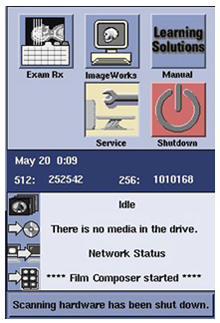
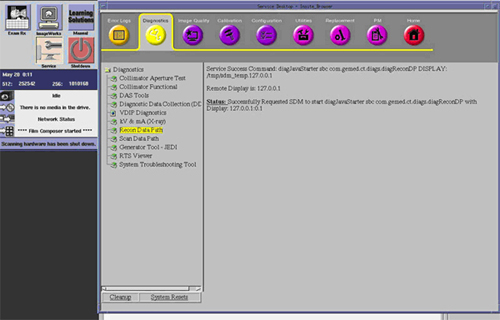
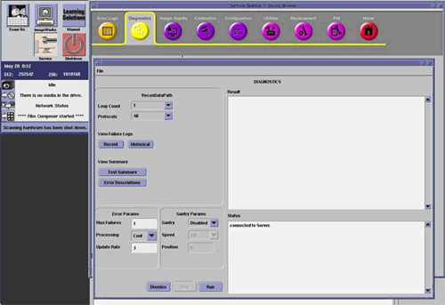
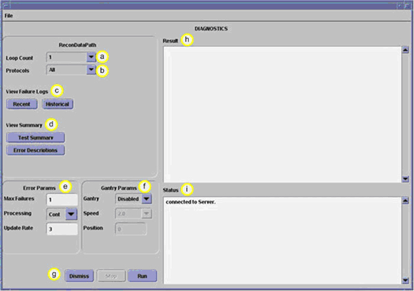

Operating Documentation
Direction 5321294, Rev# 3
GOC6 Service Methods
Operating Documentation |
| Required Persons | Preliminary Reqs | Procedure | Finalization |
|---|---|---|---|
| 1 |
The following is a procedure for checking the functionality of the Recon Engine Components for proper operation.
| Last Revised: | 26 June 2008 |
| Condition | Reference | Eff |
|---|---|---|
The CT System hardware must be in good working order. | - | - |
Only trained service personnel should service the GE CT Scanner. | - | - |
Open the Common Service Desktop (CSD) by clicking the Service ICON on the Desktop
Illustration 1: Service ICON

Click on the Diagnostics tab of the CSD.
Illustration 2: Common Service Desktop

Find Recon Data Path Test in left navigation column and start the application by clicking on Recon Data Path in the menu.
Illustration 3: Recon Data Path Window

Select the desired test conditions, Loop Count and Protocols, in the Recon Data Path Window.
Click [Run] in the Recon Data Path Window to execute test.
View test results shown in the Result box upon completion of test. No errors should present
Illustration 4: Recon Data Path Window Fields

| a | Loop Count | Number of execution sequences desired Choices: 1, 5 or continuous | |
| b | Protocols | Select Scan File type Choices: All, Axial, Helical, or Scout | |
| c | View Failure Logs | Recent | Displays current test failures in Result Box |
| Historical | Displays previous test failures in Result Box | ||
| d | View Summary | Test Summary | Displays test summary in Results Box |
| Error Descriptions | Pop-up window displayed with error descriptions | ||
| e | Error Params | Max Failures | Sets number of failures before aborting test |
| Processing | Determines if test continuously processes or stops between runs | ||
| Update rate | Determines how often to update results in Results Box | ||
| f | Gantry Params - disabled | Gantry | |
| Speed | |||
| Position | |||
| g | Action Buttons | Dismiss | Closes application (disabled during test run). |
| Stop | Stops test (enabled only after start of test). | ||
| Run | Executes test | ||
| h | Results | Test result displayed, including Pass or Fail | |
| i | Status | Test status displayed, including processing errors |
No finalization required.